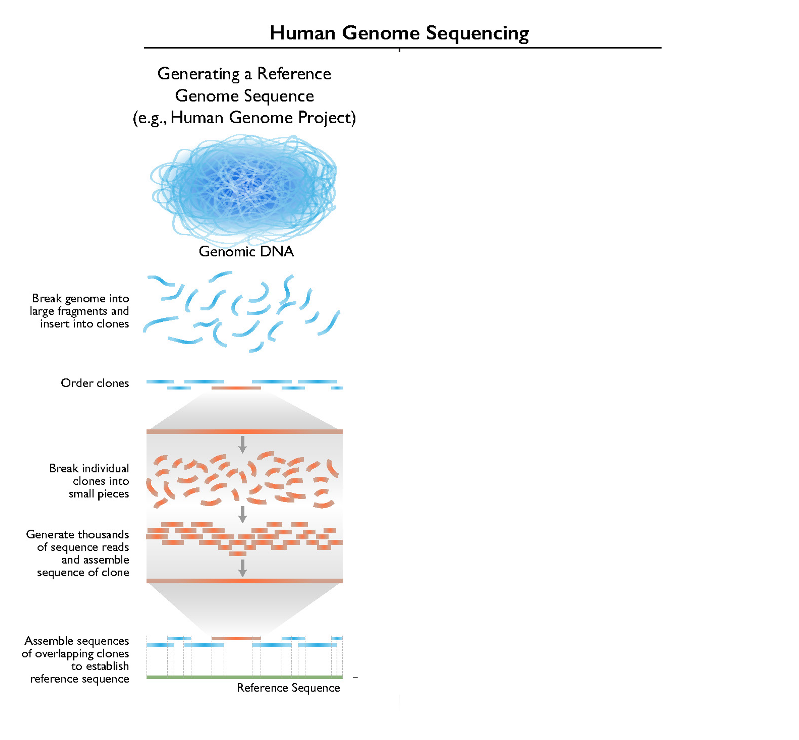
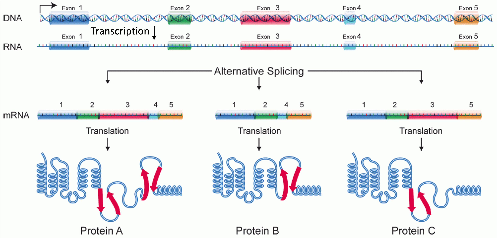

Removed
1 Sanger sequencing
This means that you need to (approximately) know in advance short flanking sequences to the sequence of interest — primers for your PCR.
Introns are good targets to sequence: variable sequences flanked by conserved sequences (exons) in which primers can be designed.
2 RNA-seq projects
- Effects of Diplodia pathogen exposure Austrian pine (Pinus nigra) over time.
- Aphid biotypes & soybean cultivars under different flood conditions (Michel lab, Entomology)
3 x

4 x

5 Microarrays
6 Overview of all steps in RNA-seq

7 Other ways of quantifying gene expression
RNA-seq is not the only method to quantify gene expression, but often the preferred one:
- Reverse-transcription qPCR (RT-qPCR)
A low-throughput method that can quantify expression levels for one or a few genes at a time
. . .
Microarrays — hybridization of cDNA to preconstructed probes
Microarrays were the transcriptomics method of choice before the advent of high-throughput sequencing, but disadvantages relative to RNA-seq include:Produce relative measurements only with a much smaller dynamic range than RNA-seq
Can only capture known features: cannot discover or examine novel features, and do not work for species without a (close) reference genome
8 Some other types of RNA-seq
Small RNA-seq for small noncoding RNAs such as microRNAs and Piwi-interacting RNAs
Single-cell RNA-seq (scRNA-seq) — commonly used in cancer research
Direct RNA sequencing
:::
9 RNA extraction
The first step is to extract RNA from tissue samples. This is typically the only step you conduct yourself in the lab, with sequencing facilities taking care of downstream procedures.
Some considerations and recommendations:
. . .
The tissue sample should be collected from an organism that is alive or recently deceased (matter of minutes), and the RNA should be extracted immediately.
With the appropriate buffer and temperate, an RNA extraction can be stored long-term.
. . .
Include a DNase treatment step to avoid DNA contamination.
Perform Quality Control (QC) on your extractions: quantity (e.g. with a Nanodrop or Qubit) and quality (degradation; e.g. with a gel). Sequencing facilities can additionally check the RIN score with a “Bioanalyzer”.
10 RIN (RNA Integrity Number) score
https://www.novogene.com/eu-en/resources/blog/rna-integrity-number-rin-explained
- The RIN score quantifies RNA quality: the lower the RIN score, the more degraded your RNA is likely to be.
- It makes use the expectation of pronounced peaks corresponding to highly abundance, intact 18S and 28S rRNAs.
11 Library prep options
Let’s consider the different options you have for RNA-seq library prep:
. . .
mRNA enrichment
Needed because mRNA makes up only a few percent of RNA molecules, and done using either:PolyA-selection: specifically selects mature (spliced) mRNAs
Ribodepletion: fishes out rRNA — this is suboptimal for mRNA-seq (presence of other RNAs and of pre-mRNAs) but can be a last resort with poor RNA quality
. . .
Library strandedness
Libraries can be “stranded” or “unstranded” — stranded libraries allow you to tell the directionality of a transcript, which in turn allows you to:Distinguish between overlapping genes
Assess whether you may have DNA contamination
12 Functional enrichment: statistics
The two most common statistical approaches are:
- Overrepresentation Analysis (ORA)
With a list of genes divided in two groups (DE vs. not-DE), test whether the groups contain different frequencies of each functional gene category, like a Chi-Square/Fisher’s Exact Test:
| DE | not-DE | |
|---|---|---|
| In photosynthesis category | 15 | 30 |
| Not in photosynthesis category | 85 | 14,870 |
. . .
- Gene Set Enrichment Analysis (GSEA)
Uses the expression level change (log-fold changes, LFC) of each gene and does not take statistical significance into account. It basically asks whether the LFCs of genes in a category are significantly shifted away from zero, either upregulated or downregulated.
13 DE analysis: other designs
Statistical designs other than pairwise comparisons are also possible. For example:
- Time series (or other continuous variables; regression analysis)
Which genes have monotonous in- or decreases across three or more time points?
. . .
Controlling for an independent variable (fixed or random effect)
Assessing the effect of one variable while controlling for another. E.g.:Which genes respond similarly to a virulent (vs. avirulent) pathogen in resistant and susceptible plants?
Which genes respond similarly to a virulent (vs. avirulent) pathogen regardless of field plot?
. . .
- Interaction effects between two independent variables
E.g.: which genes respond differently to a virulent (vs. avirulent) pathogen in resistant and susceptible plants?
14 Normalization by gene length
Several metrics of gene expression levels exist:
Adjusted by gene length and library size
E.g., FPKM (superseded) and TPM (Transcripts Per Million)Raw counts
These are used by most downstream approaches (more later).
Even though longer genes are more likely to be sampled and gene counts are therefore confounded by gene length, there is no normalization by gene length, because genes are not compared.
15 Alternative splicing & isoforms

16 Alternative splicing & isoforms
The terminology “transcript-level” vs. “gene-level”, e.g. in “transcript-level counts” refers to the distinction between having separate counts for each isoform (AKA transcript) versus a single count for each gene. Gene-level counts may either have been aggregated across isoforms, or reads were never assigned to isoforms in the first place.
17 What if I don’t have a reference genome?
Without a reference genome, an RNA-seq project is considerably more work.
These two extra steps are needed:
- De novo transcriptome assembly
First, your reads can be used to first assemble a transcriptome from scratch with a tool likeTrinity. (This is quite compute-intensive!)
. . .
Transcriptome annotation
Then, your transcriptome will need to be functionally annotated:Trying to assign gene names and functional categories to your transcripts
A very similar process to genome annotation, and works in part by using BLAST or related tools to find orthologous, already annotated, genes in other organisms.
. . .
Then, you can align to your newly assembled transcriptome the same way you would align to a reference transcriptome (obviously, you won’t have the option to align to the genome).
18 Reads to counts: alignment to a reference genome
The alignment of reads to a reference genome needs to be “splice-aware”.
Alternatively, you can align to the transcriptome (i.e., all mature transcripts).
Alignment usually consists of two steps:
One-time creation of a tool-specific “index” of the reference genome/transcriptome.
For each sample independently, alignment of the reads to the reference index.
Some of the currently most commonly used alignment tools are HISAT2 & STAR (map to genome), and RSEM & Salmon & Kallisto (map to transcriptome).
19 Reads to counts: alignment QC
These kind of stats can only be assessed after aligning to the genome (vs. to the transcriptome).
Alignment rates
What percentage of reads was successfully aligned?Low rates (<80%) => cross-species contamination or poor reference genome quality
Multi-mapped reads (mapping to multiple locations in the genome) are typically accepted by the mapper but are not or probabilistically quantified — more on this later.
. . .
Alignment targets
What percentages of aligned reads mapped to exons vs. introns vs. intergenic regions?High intronic mapping rates => presence of pre-mRNA
High intergenic mapping rates => DNA contamination or poor genome assembly/annotation quality
20 Reads to counts: alignment QC
- Across-gene coverage distribution
An uneven distribution may indicate high levels of RNA degradation
- Outlier samples
Are patterns consistent across samples or are there outliers that may need to be removed?
You can get these stats by checking the aligner’s “log” outputs, and by running tools like QualiMap and RSeQC.
21 Reads to counts: Read pre-processing
Read pre-processing includes the following steps:
Checking the quantity and quality of your reads
Does not change your data, but helps decide next steps / sample exclusion
Also useful to check for contamination, library complexity, and adapter content
Typically done with the tool
FastQC(andMultiQCfor across-sample summaries)
. . .
- Removing unwanted sequences
- Adapters, low-quality bases, and very short reads — with a tool like
TrimGalore - rRNA-derived reads — with
SortMeRNA(optional) - Contaminant sequences — with a taxonomic read classification program like
Kraken2(optional)
- Adapters, low-quality bases, and very short reads — with a tool like
22 Functional enrichment
Genome annotations for a specific organism often but not always include GO or KEGG terms.
KEGG annotations are more commonly missing but can also be more easily generated, by uploading a FASTA file with amino acid sequences to KEGG’s GhostKOALA webservice: https://www.kegg.jp/ghostkoala/.
23 DE analysis: >1 pairwise comparison
More than two groups
Plants exposed to:
- A virulent pathogen
- An avirulent pathogen
- A mock inoculation
Pairwise comparisons:
- Virulent vs. avirulent
- Mock vs. virulent
- Mock vs. avirulent
. . .
More than one independent variable
- Plant type: resistant & susceptible
- Pathogen type: virulent & avirulent
- Resistant plant vs. virulent pathogen
- Resistant plant vs. avirulent pathogen
- Susceptible plant vs. virulent pathogen
- Susceptible plant vs. avirulent pathogen
24 Side note: Dual RNA-seq
In agricultural research, it is common to study both a plant host and its adversary.
If the adversary is a microbial/viral/fungal/oomycete pathogen, it is possible or necessary to collect samples that contain both host and pathogen.
When these samples are subjected to RNA-seq, they will contain both host and pathogen reads.
These reads can be separated bioinformatically and when both host and pathogen reads are analyzed, this is called a dual RNA-seq experiment.